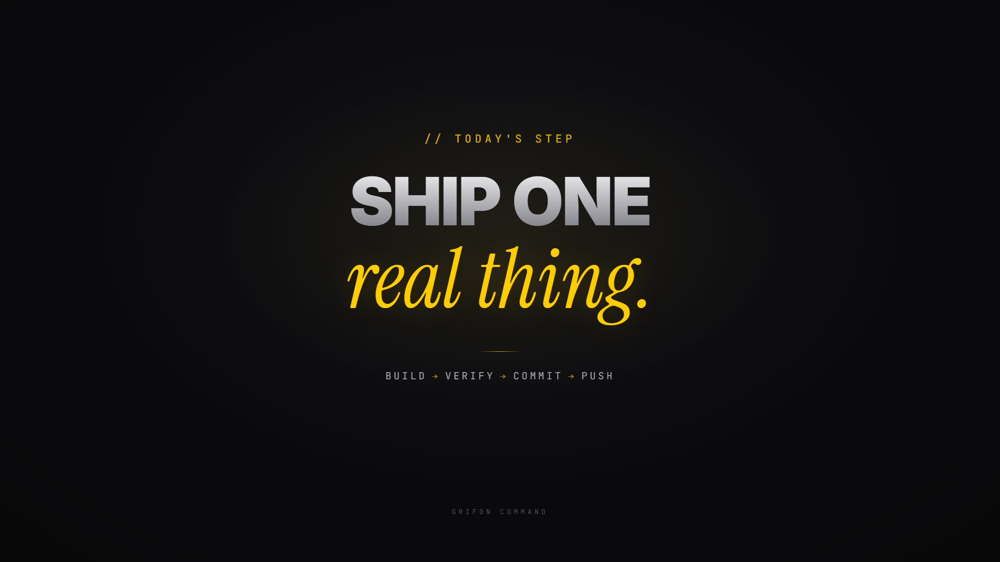
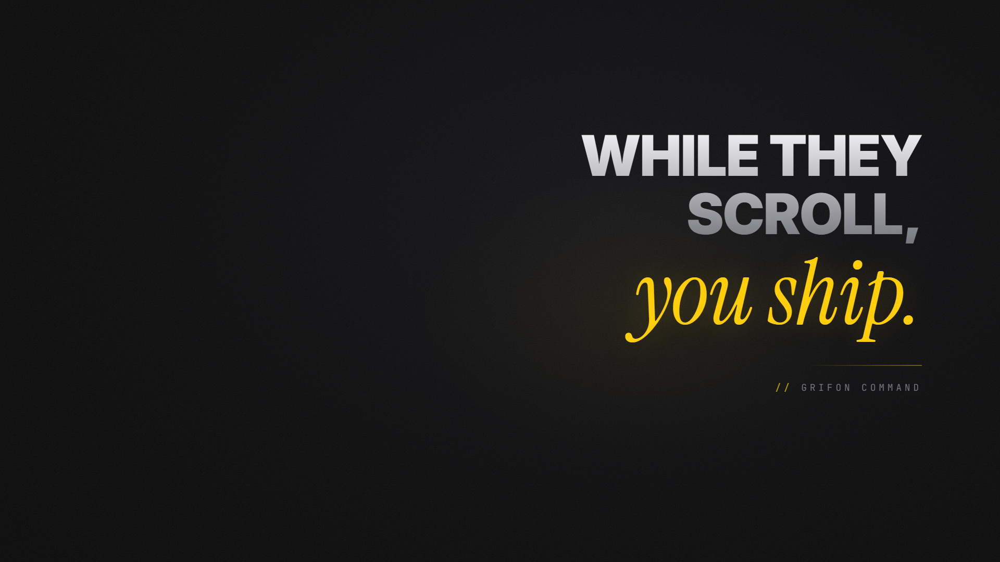
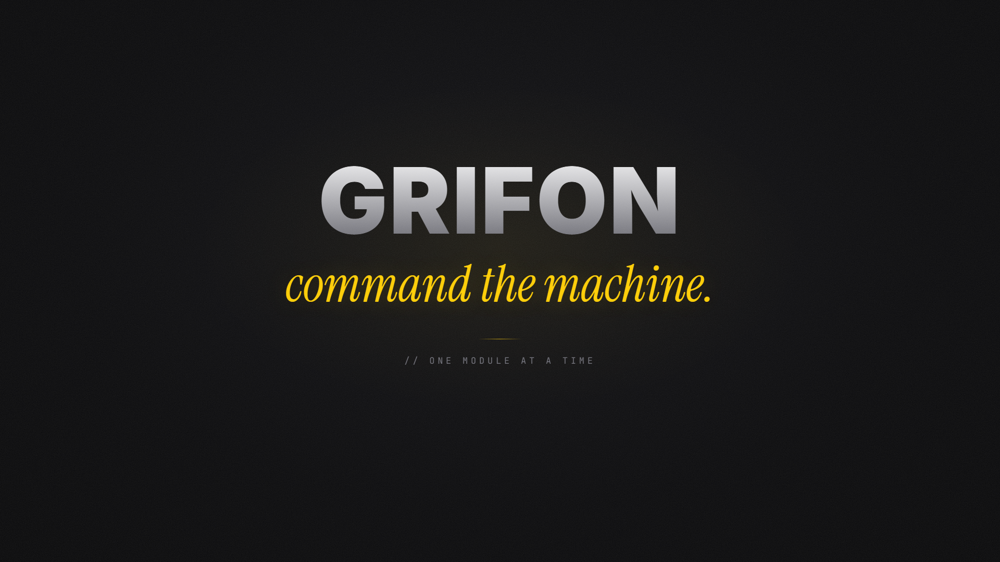

powershell -ExecutionPolicy Bypass -File scripts\set-wallpaper.ps1 -Variant v4a-plate
(or v1/v2/v3/v4b-aperture) from the repo root. Re-run after every defreezer reboot — it's on the session re-arm checklist.
screen (which only lightens, so it milked the blacks instead of
graining them), and the gold bloom was a wide dim text-shadow that traced the glyphs in
khaki instead of lighting them.


